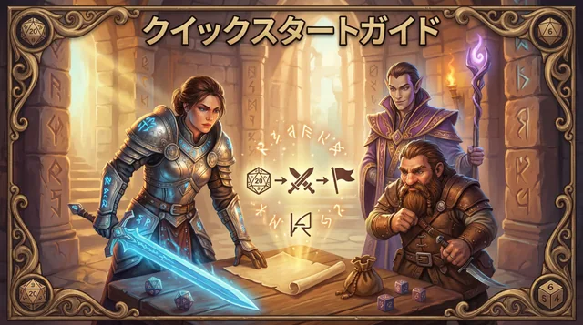
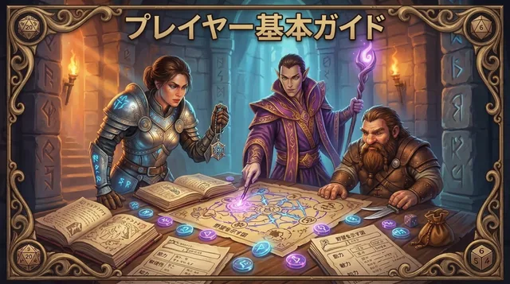
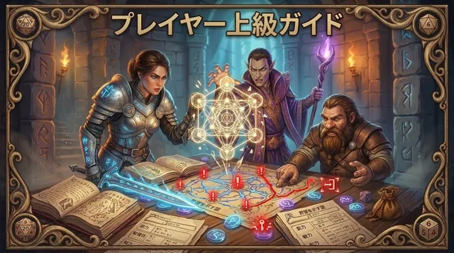
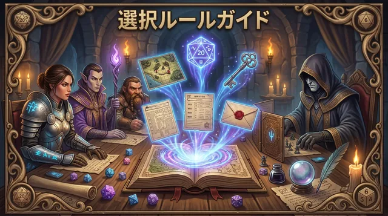
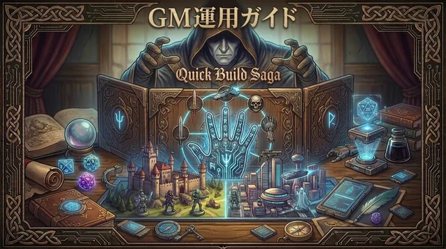
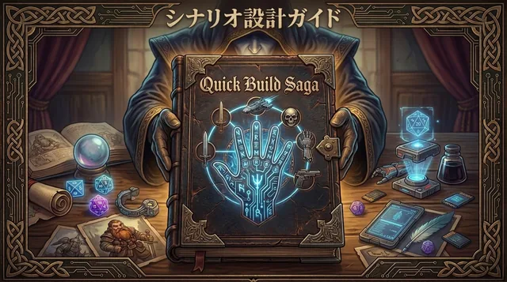
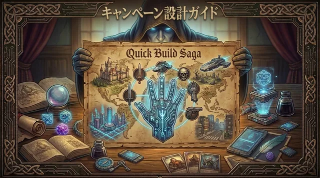
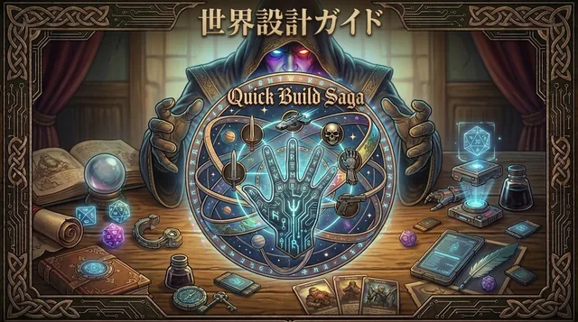

For Players
プレイヤーはここから
初見プレイヤー向けの入口です。ルールを全部覚えるより、まずは「今どう動くか」を書けるところまで辿ることを優先しています。

クイックスタート
はじめて遊ぶ人向けに、主人公の作り方（最初は 5 項目で十分）、1往復の流れ、返事で何を書くか、GM の返事の見方を短く整理した入門ガイドです。
開く
プレイヤー基本ルール
PC作成、局面の読み方、自由記述での宣言、タグ、命運点、Q/B/S の基本、保持と変質の記録 までまとめた基本ガイドです。
開く
プレイヤー実戦ガイド
宣言の骨格、選択肢例の読み方、高難度卓での考え方、選択肢例を出発点として自分の宣言へ組み替えるコツ、保持 / 変質 / 表示ラベルの扱い、成長処理、テンプレート類をまとめた実戦ガイドです。
開く
選択ルール集
各モードの説明を一か所にまとめた別冊です。プレイヤー向けの読み方、GMの運用、キャンペーンでの置き方をモードごとに確認できます。
開く'/%3E%3Crect x='88' y='96' width='1104' height='528' rx='36' fill='%23ffffff' stroke='%23c8d7f4' stroke-width='8'/%3E%3Crect x='156' y='164' width='360' height='44' rx='22' fill='%23eaf1ff'/%3E%3Crect x='156' y='242' width='650' height='30' rx='15' fill='%23d7e4ff'/%3E%3Crect x='156' y='294' width='540' height='30' rx='15' fill='%23d7e4ff'/%3E%3Crect x='156' y='374' width='280' height='140' rx='24' fill='%23f4f8ff' stroke='%23d7e4ff' stroke-width='6'/%3E%3Crect x='474' y='374' width='280' height='140' rx='24' fill='%23f4f8ff' stroke='%23d7e4ff' stroke-width='6'/%3E%3Crect x='792' y='374' width='280' height='140' rx='24' fill='%23f4f8ff' stroke='%23d7e4ff' stroke-width='6'/%3E%3Ccircle cx='1040' cy='208' r='66' fill='%23204a8f' opacity='.16'/%3E%3Ccircle cx='1040' cy='208' r='36' fill='%23204a8f' opacity='.26'/%3E%3C/svg%3E)
診断ツール
物語の好みや苦手な空気から、QBS へ入りやすい入口と相性のよい味付けを見つける初心者向けの診断ページです。
開く
PCテンプレート編集ツール
自然言語で考えた PC 案を、正式な PC テンプレートへ自分で落とし切る ための厳密入力ツールです。GM / AI の解釈を挟みたくない上級者・熟練者向けに使えます。
開く
宣言テンプレート編集ツール
局面文と PC 情報を参照しながら、宣言を正式テンプレートへ自分で落とし切る ための厳密入力ツールです。GM / AI の解釈を挟みたくない上級者・熟練者向けに使えます。
開く迷ったときの近道
成長点はいつ使う？
シナリオ終了時の整理で使い、GM の進行に合わせて申告する流れを確認できます。
開くQ/B/Sって何？
QBS では、いま言語上すでに成立しているものを Quiddities、将来に備えて焦点化・保持したものを Builds、それらが他者との関係の中で変質し続ける連なりを Stories と読みます。資産、関係、感情、火種、人物像の違いは、本質の違いではなく、読み味と記録のための表示差です。
開く宣言はどう書く？
すぐ使える宣言テンプレートと、主目的・最低限ライン・担保の置き方を確認できます。
開く選択肢例はそのまま選んでいい？
初級〜中級では出発点として使いやすいですが、峻烈 / 悪辣ではそのままなぞるだけだと重い代償や罠になることがあります。退路や守りたいものを一言足す目安を確認できます。
開く旅や発見を主軸にしたい？
ゼノス・モードでは、未知の土地や異文化への驚き、交流、持ち帰りを主軸にした遊び方を確認できます。
開くPC作成はどこから？
PCテンプレート編集ツールから始めれば、最初の 5 項目を埋めながら参加用の下書きを作れます。命運点と野望度は GM 確認で整えます。
開くモードはどこで読む？
オブザーバー、プロバビリティ、ゼノスなどの選択ルールを、別冊の選択ルール集に集約しました。
開くFor GMs
GM向け資料
GM として卓を回す人向けの入口です。運用・単発設計・キャンペーン設計・世界作成を、役割ごとに分けて置いています。

GMガイド
既存のシナリオや資料をもとに、局面投稿、宣言読解、難度運用、裁定手順、卓の進行管理を行うための GM 向けガイドです。
開く
シナリオ設計ガイド
単発シナリオの問い、条件、期限、主要局面、構造難度、高難度化、テンプレート類を整理するための設計ガイドです。
開く
キャンペーン設計ガイド
野望度終点、想定本数、節目、持ち越し資源、難度曲線、長期の世界反応まで、長編運用を整えるための設計ガイドです。
開く
世界作成ガイド
QBS の宣言、裁定、シナリオ設計、キャンペーン設計と整合する舞台の作り方をまとめたガイドです。
開く選択ルール集
各モードの採用基準、GMの内部運用、キャンペーンでの配置方針を、重複なく一か所にまとめた別冊です。
開くWorlds
世界観ごとのセクション
世界観ごとに、設定集・シナリオ・リプレイなどをまとめて置ける枠です。ここでは4つの世界観を独立したサブセクションとして並べています。
Fantasy
異世界ファンタジー（イルセア西部・灰冠時代）
雪と飢えと古い約束に揺れる王国イルセア西部を舞台に、世界の紹介、ロアン一代記、各章の参加手札への入口をまとめた公開セクションです。
Oriental Picaresque
東洋末法ピカレスク（大日輪皇水朝・近世）
近世の東洋帝国「大日輪皇水朝」を舞台に、末法の世を渡り歩くならず者・侠客・密偵たちの活劇を扱う予定の世界観セクションです。

Steampunk
スチームパンク（東雲皇国・近現代）
帝都の街並み、産業、交通、報道、軍事や市井の暮らしを舞台に広げていく予定の世界観セクションです。

Post-Apocalypse
ポストアポカリプス（日本・現代）
崩壊後の現代日本を舞台にしたサバイバル、隔離、探索、共同体運営を扱う予定の世界観セクションです。

Others
その他
旧版や補助資料など、基本ルールや世界観セクションとは別枠で置いておきたいページをまとめる場所です。